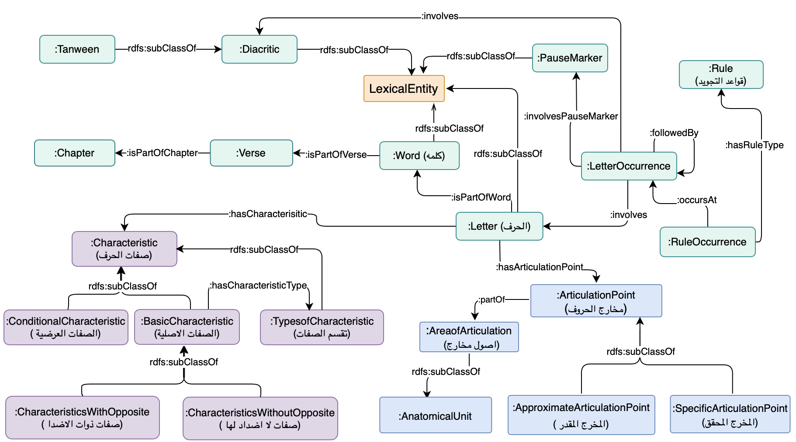

- This version:
- http://www.semantictajweed.com/ontology/1.0.0
- Latest version:
- http://www.semantictajweed.com/ontology/
- Authors:
- Amna Basharat
- Amna Binte Kamran
- Download serialization:


- License:

- Cite as:
- Amna binte Kamran, Amna Basharat. The Semantic Tajweed Ontology.
The Semantic Tajweed Ontology: Description back to ToC
The SemanticTajweed ontology is developed to formalize and preserve the rules of Quranic recitation (Tajweed), focusing on phonetic, articulation, and linguistic principles embedded in the Quranic script. This ontology serves as a structured vocabulary to model Quranic letters, diacritics, articulation points, and Tajweed rules, enabling automated reasoning over recitation correctness and phonological patterns. Cross-reference for Tajweed Rules classes, object properties and data properties back to ToC
This section provides details for each class and property defined by Tajweed Rules.Classes
- AreaOfArticulation
- ArticulationPoint
- basic harakaat
- Characteristic
- complete idghaam rule
- complete idghaam with ghunnah letter
- damma dammatain
- diacritic
- fatha damma
- fatha fathatain
- fatha kasra
- fathain dammain
- ghunnah letter
- ghunnah rule
- hamza letter
- hamzatulwasal rule
- Haroof Ash shafawiya
- Haroof e Lathawiyya
- Haroof e Natiyya
- Haroof e Saafir
- Haroof e Shajariya
- haroofe althalqeeyah
- haroofe lahawiyyayn
- haroofe madeeya
- idghaam mutajanisain letter
- idghaam rule
- idghaam shafawi letter
- idghaam with ghunnah letter
- idghaam without ghunnah letter
- ikhfa letter
- ikhfa shafawi letter
- incomplete idghaam rule
- incomplete idghaam with ghunnah letter
- iqlab letter
- izhar letter
- izhar shafawi letter
- kasra kasratain
- laam rule
- Letter
- lexical entity
- medd diacritic
- medd laazim
- medd laazim kalmi
- medd leen
- medd on stopping rule
- medd rule
- medd sila rule
- meem sakinah rule
- middle characteristic
- nabr rule
- natural leen rule
- natural medd derived
- natural medd primary
- natural medd rule
- non basic diacritic
- non ghunnah letter
- non haa yaa letter
- non pronounced diacritic
- noon sakinah and tanween rule
- not kasra
- pause marker
- permanent tafkheem letter
- permanent tarqeeq letter
- qalqalah letter
- qalqalah rule
- qamari letter
- secondary medd
- shamsi letter
- silent letter
- six harakah letter
- stopping rule
- strong characteristic
- sukoon on stop diacritic
- tafkheem letter
- tafkheem rule
- takhfeem permanent rule
- takhfeem temporary rule
- tanween
- tarqeeq letter
- tarqeeq rule
- temporary tafkheem letter
- temporary tarqeeq letter
- The Huroof Muqata’aat
- two harakah letter
- weak characteristic
- Word
- الصفات الاصلية
- الصفات العرضية
- المخرج المحقق
- المخرج المقدر
- حروف_المد
- صفات ذوات الاضدا
- صفات غیرمتضادہ
AreaOfArticulationc back to ToC or Class ToC
IRI: http://www.semantictajweed.com/ontology/AreaOfArticulation
- has super-classes
- anatomical unit c
- is in domain of
- is involved in articulation of op
- is in range of
- involves articulation area op
- has members
- Empty Spaces in Mouth and Throat ni, Mouth ni, Nose ni, Throat ni
- is disjoint with
- Characteristic c, Letter c, lexical entity c
- is also defined as
- named individual
ArticulationPointc back to ToC or Class ToC
IRI: http://www.semantictajweed.com/ontology/ArticulationPoint
- has super-classes
- has sub-classes
- المخرج المحقق c, المخرج المقدر c
- is in domain of
- involves anatomical unit op, is articulation pointof op
- is in range of
- مخرج op
- has members
- articulation point e1 ni, اقصی اللسان بالمقابل نرم اور سخت تالو ni, اقصی اللسان بالمقابل نرم تالو ni, جب ثنایا علیا کے کنارے نچلے ہونٹ کے اندرونی حصہ سے لگیں ni, جب حافۃ اللسان بالمقابل اضراس علیا (ضواحک،طواحن،نواجذ) سے لگے ni, حلق کا درمیانی حصے سے ادا ہوتے ہے ni, حلق کا سب سے گہرے حصے سے ادا ہوتے ہے ni, حلق کا قریب ترین حصے سے ادا ہوتے ہے ni, دونوں ہونٹوں کو ملانے سے ادا ہوتا ہے ni, دونوں ہونٹوں کے ملنے سے ni, طرف اللسان مع ظھراللسان جب ثنایا علیا کے مسوڑھوں سے لگے ni, طرف اللسان جب ثنایا علیا کی جڑسےلگے ni, طرف اللسان جب ثنایا سفلیٰ کےاندرونی کناروں سے لگے ni, طرف اللسان جب ثنایا علیا کے مسوڑھوں سے لگے ni, طرف اللسان جب ثنایا علیا کے کناروں سے لگے ni, طرفاللسان مع ادنیٰ حافہ جب اسنان علیا(ثنایا،رباعی،انیاب )اورضواحک کے مسوڑھوں سے لگے ni, وسط اللسان بالمقابل اوپرکاتالو سے لگے ni
- is disjoint with
- Characteristic c, Letter c, lexical entity c
- is also defined as
- named individual
basic harakaatc back to ToC or Class ToC
IRI: http://www.semantictajweed.com/ontology/BasicHarakaat
- has super-classes
- diacritic c
- has members
- no diacritic ni, َ ni, ُ ni, ِ ni
Characteristicc back to ToC or Class ToC
IRI: http://www.semantictajweed.com/ontology/Characteristic
- has sub-classes
- الصفات الاصلية c, الصفات العرضية c
- is disjoint with
- AreaOfArticulation c, ArticulationPoint c, Letter c
- is also defined as
- named individual
complete idghaam rulec back to ToC or Class ToC
IRI: http://www.semantictajweed.com/ontology/CompleteIdghaamRule
- has super-classes
- idghaam rule c
- has members
- idghaam with ghunnah complete ni, idghaam without ghunnah ni
complete idghaam with ghunnah letterc back to ToC or Class ToC
IRI: http://www.semantictajweed.com/ontology/CompleteIdghaamWithGhunnahLetter
- has super-classes
- idghaam with ghunnah letter c
- has members
- م ni, ن ni
damma dammatainc back to ToC or Class ToC
IRI: http://www.semantictajweed.com/ontology/DammaDammatain
diacriticc back to ToC or Class ToC
IRI: http://www.semantictajweed.com/ontology/Diacritic
- has super-classes
- lexical entity c
- has sub-classes
- basic harakaat c, damma dammatain c, fatha damma c, fatha fathatain c, fatha kasra c, fathain dammain c, kasra kasratain c, medd diacritic c, non basic diacritic c, non pronounced diacritic c, not kasra c, sukoon on stop diacritic c, tanween c
- has members
- no diacritic ni, ـ ni, ً ni, ٌ ni, َ ni, ُ ni, ِ ni, ّ ni, ْ ni, ٓ ni, ٰ ni, ۜ ni, ۟ ni, ۠ ni, ۢ ni, ۣ ni, ۥ ni, ۦ ni, ۧ ni, ۨ ni, ۪ ni, ۫ ni, ۬ ni, ۭ ni
fatha fathatainc back to ToC or Class ToC
IRI: http://www.semantictajweed.com/ontology/FathaFathatain
fathain dammainc back to ToC or Class ToC
IRI: http://www.semantictajweed.com/ontology/FathainDammain
ghunnah rulec back to ToC or Class ToC
IRI: http://www.semantictajweed.com/ontology/GhunnahRule
- has super-classes
- rule c
- has members
- ghunnah complete ni, idghaam with ghunnah ni, incomplete ghunnah ni
hamzatulwasal rulec back to ToC or Class ToC
IRI: http://www.semantictajweed.com/ontology/HamzatulwasalRule
- has super-classes
- rule c
- has members
- hamzah al wasal ni
Haroof Ash shafawiyac back to ToC or Class ToC
IRI: http://www.semantictajweed.com/ontology/HaroofAshshafawiya
- is equivalent to
- Letter c and (مخرج op value دونوں ہونٹوں کو ملانے سے ادا ہوتا ہے)
- (Letter c and (مخرج op value جب ثنایا علیا کے کنارے نچلے ہونٹ کے اندرونی حصہ سے لگیں)) or (مخرج op value دونوں ہونٹوں کے ملنے سے)
- is also defined as
- named individual
Haroof e Lathawiyyac back to ToC or Class ToC
IRI: http://www.semantictajweed.com/ontology/HaroofeLathawiyya
- is equivalent to
- Letter c and (مخرج op value طرف اللسان جب ثنایا علیا کے کناروں سے لگے)
- is also defined as
- named individual
Haroof e Natiyyac back to ToC or Class ToC
IRI: http://www.semantictajweed.com/ontology/HaroofeNatiyya
- is equivalent to
- Letter c and (مخرج op value طرف اللسان جب ثنایا علیا کی جڑسےلگے)
- is also defined as
- named individual
Haroof e Saafirc back to ToC or Class ToC
IRI: http://www.semantictajweed.com/ontology/HaroofeSaafir
- is equivalent to
- Letter c and (مخرج op value طرف اللسان جب ثنایا سفلیٰ کےاندرونی کناروں سے لگے)
- is also defined as
- named individual
Haroof e Shajariyac back to ToC or Class ToC
IRI: http://www.semantictajweed.com/ontology/HaroofeShajariya
- is equivalent to
- Letter c and (مخرج op value وسط اللسان بالمقابل اوپرکاتالو سے لگے)
- is also defined as
- named individual
haroofe althalqeeyahc back to ToC or Class ToC
IRI: http://www.semantictajweed.com/ontology/HaroofeAlthalqeeyah
- is equivalent to
- (Letter c and (مخرج op value طرف اللسان مع ظھراللسان جب ثنایا علیا کے مسوڑھوں سے لگے)) or (مخرج op value طرفاللسان مع ادنیٰ حافہ جب اسنان علیا(ثنایا،رباعی،انیاب )اورضواحک کے مسوڑھوں سے لگے) or (مخرج op value طرف اللسان جب ثنایا علیا کے مسوڑھوں سے لگے)
- has super-classes
- Letter c
haroofe lahawiyyaync back to ToC or Class ToC
IRI: http://www.semantictajweed.com/ontology/HaroofeLahawiyyayn
- is equivalent to
- (Letter c and (مخرج op value اقصی اللسان بالمقابل نرم تالو)) or (مخرج op value اقصی اللسان بالمقابل نرم اور سخت تالو)
- has super-classes
- Letter c
- is also defined as
- named individual
haroofe madeeyac back to ToC or Class ToC
IRI: http://www.semantictajweed.com/ontology/HaroofeMadeeya
- is equivalent to
- Letter c and (مخرج op value articulation point e1)
- has super-classes
- Letter c
- is also defined as
- named individual
idghaam mutajanisain letterc back to ToC or Class ToC
IRI: http://www.semantictajweed.com/ontology/IdghaamMutajanisainLetter
idghaam rulec back to ToC or Class ToC
IRI: http://www.semantictajweed.com/ontology/IdghaamRule
- has super-classes
- rule c
- has sub-classes
- complete idghaam rule c, incomplete idghaam rule c
- has members
- idghaam mutabaidaan ni, idghaam mutajanisaan ni, idghaam mutamasilaan ni, idghaam mutaqaribaan ni
idghaam shafawi letterc back to ToC or Class ToC
IRI: http://www.semantictajweed.com/ontology/IdghaamShafawiLetter
idghaam with ghunnah letterc back to ToC or Class ToC
IRI: http://www.semantictajweed.com/ontology/IdghaamWithGhunnahLetter
- has super-classes
- Letter c
- has sub-classes
- complete idghaam with ghunnah letter c, incomplete idghaam with ghunnah letter c
- has members
- م ni, ن ni, و ni, ي ni
idghaam without ghunnah letterc back to ToC or Class ToC
IRI: http://www.semantictajweed.com/ontology/IdghaamWithoutGhunnahLetter
ikhfa shafawi letterc back to ToC or Class ToC
IRI: http://www.semantictajweed.com/ontology/IkhfaShafawiLetter
incomplete idghaam rulec back to ToC or Class ToC
IRI: http://www.semantictajweed.com/ontology/IncompleteIdghaamRule
- has super-classes
- idghaam rule c
- has members
- idghaam with ghunnah in complete ni
incomplete idghaam with ghunnah letterc back to ToC or Class ToC
IRI: http://www.semantictajweed.com/ontology/IncompleteIdghaamWithGhunnahLetter
- has super-classes
- idghaam with ghunnah letter c
- has members
- و ni, ي ni
izhar shafawi letterc back to ToC or Class ToC
IRI: http://www.semantictajweed.com/ontology/IzharShafawiLetter
kasra kasratainc back to ToC or Class ToC
IRI: http://www.semantictajweed.com/ontology/KasraKasratain
laam rulec back to ToC or Class ToC
IRI: http://www.semantictajweed.com/ontology/LaamRule
- has super-classes
- rule c
- has members
- laam al qamari ni, laam ash shamsi ni, laam jalalah ni
Letterc back to ToC or Class ToC
IRI: http://www.semantictajweed.com/ontology/Letter
- has super-classes
- lexical entity c
- has sub-classes
- The Huroof Muqata’aat c, ghunnah letter c, hamza letter c, haroofe althalqeeyah c, haroofe lahawiyyayn c, haroofe madeeya c, idghaam mutajanisain letter c, idghaam shafawi letter c, idghaam with ghunnah letter c, idghaam without ghunnah letter c, ikhfa letter c, ikhfa shafawi letter c, iqlab letter c, izhar letter c, izhar shafawi letter c, non ghunnah letter c, non haa yaa letter c, qalqalah letter c, qamari letter c, shamsi letter c, silent letter c, tafkheem letter c, tarqeeq letter c, حروف_المد c
- is in domain of
- belongs to group op, has characteristic op, is close to op, is similar to op, مخرج op
- is in range of
- has letter op, involves letter op, is articulation pointof op, is characteristic of op, is close to op, is similar to op
- has members
- ء ni, آ ni, أ ni, ؤ ni, إ ni, ئ ni, ا ni, ب ni, ة ni, ت ni, ث ni, ج ni, ح ni, خ ni, د ni, ذ ni, ر ni, ز ni, س ni, ش ni, ص ni, ض ni, ط ni, ظ ni, ع ni, غ ni, ف ni, ق ni, ك ni, ل ni, م ni, ن ni, ه ni, و ni, ى ni, ي ni, ٔ ni, ٱ ni
- is disjoint with
- AreaOfArticulation c, ArticulationPoint c, Characteristic c
- is also defined as
- named individual
lexical entityc back to ToC or Class ToC
IRI: http://www.semantictajweed.com/ontology/LexicalEntity
- has sub-classes
- Letter c, Word c, diacritic c, pause marker c
- is disjoint with
- AreaOfArticulation c, ArticulationPoint c
medd diacriticc back to ToC or Class ToC
IRI: http://www.semantictajweed.com/ontology/MeddDiacritic
- has super-classes
- diacritic c
- has members
- no diacritic ni, ٓ ni
medd laazimc back to ToC or Class ToC
IRI: http://www.semantictajweed.com/ontology/MeddLaazim
- has super-classes
- secondary medd c
- has sub-classes
- medd laazim kalmi c
- has members
- medd laazim kalmi m ni, medd laazim kalmi m k ni, medd lazim ni
medd laazim kalmic back to ToC or Class ToC
IRI: http://www.semantictajweed.com/ontology/MeddLaazimKalmi
- has super-classes
- medd laazim c
medd leenc back to ToC or Class ToC
IRI: http://www.semantictajweed.com/ontology/MeddLeen
- has super-classes
- medd on stopping rule c
- has members
- medd wow leen ni, medd yaa leen ni
medd on stopping rulec back to ToC or Class ToC
IRI: http://www.semantictajweed.com/ontology/MeddOnStoppingRule
- has super-classes
- medd rule c
- has sub-classes
- medd leen c
- has members
- medd al arid sukoon ni, medd al ewad ni, medd wow leen ni, medd yaa leen ni
medd rulec back to ToC or Class ToC
IRI: http://www.semantictajweed.com/ontology/MeddRule
- has super-classes
- rule c
- has sub-classes
- medd on stopping rule c, medd sila rule c, natural medd rule c, secondary medd c
medd sila rulec back to ToC or Class ToC
IRI: http://www.semantictajweed.com/ontology/MeddSilaRule
- has super-classes
- medd rule c
- has members
- medd as sila ni, medd as sila kubra ni, medd as sila small wow ni, medd as sila small yaa ni, medd as sila wow kubra ni, medd as sila yaa kubra ni
meem sakinah rulec back to ToC or Class ToC
IRI: http://www.semantictajweed.com/ontology/MeemSakinahRule
- has super-classes
- rule c
- has members
- idghaam ash shafawi ni, ikhfa ash shafawi ni
middle characteristicc back to ToC or Class ToC
IRI: http://www.semantictajweed.com/ontology/MiddleCharacteristic
- is equivalent to
- Characteristic c and (has characteristic type op value Middle Characteristics)
nabr rulec back to ToC or Class ToC
IRI: http://www.semantictajweed.com/ontology/NabrRule
- has super-classes
- rule c
- has members
- nabr hamza sukun ni, nabr medd ni, nabr stop shadd ni, nabr wow shadd ni, nabr yaa shadd ni
natural leen rulec back to ToC or Class ToC
IRI: http://www.semantictajweed.com/ontology/NaturalLeenRule
natural medd derivedc back to ToC or Class ToC
IRI: http://www.semantictajweed.com/ontology/NaturalMeddDerived
- has super-classes
- natural medd rule c
- has members
- medd dagger alif ni, medd wow small wow ni, medd yaa small high yaa ni, medd yaa small yaa ni
natural medd primaryc back to ToC or Class ToC
IRI: http://www.semantictajweed.com/ontology/NaturalMeddPrimary
- has super-classes
- natural medd rule c
- has members
- medd alif ni, medd wow ni, medd yaa ni
natural medd rulec back to ToC or Class ToC
IRI: http://www.semantictajweed.com/ontology/NaturalMeddRule
- has super-classes
- medd rule c
- has sub-classes
- natural medd derived c, natural medd primary c
- has members
- medd al ewad ni, medd alif ni, medd as sila ni, medd as sila small wow ni, medd as sila small yaa ni, medd dagger alif ni, medd wow ni, medd wow small wow ni, medd yaa ni, medd yaa small yaa ni, original medd ni
non basic diacriticc back to ToC or Class ToC
IRI: http://www.semantictajweed.com/ontology/NonBasicDiacritic
non ghunnah letterc back to ToC or Class ToC
IRI: http://www.semantictajweed.com/ontology/NonGhunnahLetter
non haa yaa letterc back to ToC or Class ToC
IRI: http://www.semantictajweed.com/ontology/NonHaaYaaLetter
non pronounced diacriticc back to ToC or Class ToC
IRI: http://www.semantictajweed.com/ontology/NonPronouncedDiacritic
- has super-classes
- diacritic c
- has members
- no diacritic ni, ْ ni
noon sakinah and tanween rulec back to ToC or Class ToC
IRI: http://www.semantictajweed.com/ontology/NoonSakinahAndTanweenRule
- has super-classes
- rule c
- has members
- idghaam with ghunnah ni, idghaam with ghunnah complete ni, idghaam with ghunnah in complete ni, idghaam without ghunnah ni, ikhfa ni, iqlab ni, izhar ni
pause markerc back to ToC or Class ToC
IRI: http://www.semantictajweed.com/ontology/PauseMarker
- has super-classes
- lexical entity c
- has members
- ni
permanent tafkheem letterc back to ToC or Class ToC
IRI: http://www.semantictajweed.com/ontology/PermanentTafkheemLetter
permanent tarqeeq letterc back to ToC or Class ToC
IRI: http://www.semantictajweed.com/ontology/PermanentTarqeeqLetter
qalqalah letterc back to ToC or Class ToC
IRI: http://www.semantictajweed.com/ontology/QalqalahLetter
qalqalah rulec back to ToC or Class ToC
IRI: http://www.semantictajweed.com/ontology/QalqalahRule
- has super-classes
- rule c
- has members
- greater qalqalah ni, lesser qalqalah ni, qalqalah ni
secondary meddc back to ToC or Class ToC
IRI: http://www.semantictajweed.com/ontology/SecondaryMedd
- has super-classes
- medd rule c
- has sub-classes
- medd laazim c
- has members
- medd as sila kubra ni, medd as sila wow kubra ni, medd as sila yaa kubra ni, medd munfasil ni, medd munfasil derived ni, medd munfasil primary ni, medd muttasil ni, medd muttasil derived ni, medd muttasil primary ni
six harakah letterc back to ToC or Class ToC
IRI: http://www.semantictajweed.com/ontology/SixHarakahLetter
stopping rulec back to ToC or Class ToC
IRI: http://www.semantictajweed.com/ontology/StoppingRule
- has super-classes
- rule c
strong characteristicc back to ToC or Class ToC
IRI: http://www.semantictajweed.com/ontology/StrongCharacteristic
- is equivalent to
- Characteristic c and (has characteristic type op value Strong Characteristics)
sukoon on stop diacriticc back to ToC or Class ToC
IRI: http://www.semantictajweed.com/ontology/SukoonOnStopDiacritic
tafkheem letterc back to ToC or Class ToC
IRI: http://www.semantictajweed.com/ontology/TafkheemLetter
- has super-classes
- Letter c
- has sub-classes
- permanent tafkheem letter c, temporary tafkheem letter c
tafkheem rulec back to ToC or Class ToC
IRI: http://www.semantictajweed.com/ontology/TafkheemRule
- has super-classes
- rule c
- has sub-classes
- takhfeem permanent rule c, takhfeem temporary rule c
- has members
- tafkheem ni, tafkheem highest ni, tafkheem lowest ni, tafkheem middle ni
takhfeem permanent rulec back to ToC or Class ToC
IRI: http://www.semantictajweed.com/ontology/TakhfeemPermanentRule
- has super-classes
- tafkheem rule c
takhfeem temporary rulec back to ToC or Class ToC
IRI: http://www.semantictajweed.com/ontology/TakhfeemTemporaryRule
- has super-classes
- tafkheem rule c
- has members
- tafkheem alif ni, tafkheem laam jalalah ni, tafkheem raa ni
tarqeeq letterc back to ToC or Class ToC
IRI: http://www.semantictajweed.com/ontology/TarqeeqLetter
- has super-classes
- Letter c
- has sub-classes
- permanent tarqeeq letter c, temporary tarqeeq letter c
tarqeeq rulec back to ToC or Class ToC
IRI: http://www.semantictajweed.com/ontology/TarqeeqRule
- has super-classes
- rule c
- has members
- tarqeeq alif ni, tarqeeq laam ni, tarqeeq raa ni
temporary tafkheem letterc back to ToC or Class ToC
IRI: http://www.semantictajweed.com/ontology/TemporaryTafkheemLetter
- has super-classes
- tafkheem letter c
- has members
- ا ni, ر ni, ل ni, ى ni
temporary tarqeeq letterc back to ToC or Class ToC
IRI: http://www.semantictajweed.com/ontology/TemporaryTarqeeqLetter
- has super-classes
- tarqeeq letter c
- has members
- ا ni, ر ni, ل ni
The Huroof Muqata’aatc back to ToC or Class ToC
IRI: http://www.semantictajweed.com/ontology/DisjointedLetter
- has super-classes
- Letter c
- has sub-classes
- six harakah letter c, two harakah letter c
- is also defined as
- named individual
two harakah letterc back to ToC or Class ToC
IRI: http://www.semantictajweed.com/ontology/TwoHarakahLetter
weak characteristicc back to ToC or Class ToC
IRI: http://www.semantictajweed.com/ontology/WeakCharacteristic
- is equivalent to
- Characteristic c and (has characteristic type op value الصفات الضعيفة)
Wordc back to ToC or Class ToC
IRI: http://www.semantictajweed.com/ontology/Word
- has super-classes
- lexical entity c
- is in domain of
- has letter op, has letter occurrence op
- is also defined as
- named individual
الصفات الاصليةc back to ToC or Class ToC
IRI: http://www.semantictajweed.com/ontology/BasicCharacteristic
- has super-classes
- Characteristic c
- has sub-classes
- صفات ذوات الاضدا c, صفات غیرمتضادہ c
- is in domain of
- has characteristic type op, is characteristic of op
- is in range of
- has characteristic op, has characteristic type op
- is disjoint with
- الصفات العرضية c
- is also defined as
- named individual
الصفات العرضيةc back to ToC or Class ToC
IRI: http://www.semantictajweed.com/ontology/ConditionalCharacteristic
- has super-classes
- Characteristic c
- is disjoint with
- الصفات الاصلية c
- is also defined as
- named individual
المخرج المحققc back to ToC or Class ToC
IRI: http://www.semantictajweed.com/ontology/SpecificArticulationPoint
- has super-classes
- ArticulationPoint c
- is also defined as
- named individual
المخرج المقدرc back to ToC or Class ToC
IRI: http://www.semantictajweed.com/ontology/ApproximateArticulationPoint
- has super-classes
- ArticulationPoint c
- is also defined as
- named individual
حروف_المدc back to ToC or Class ToC
IRI: http://www.semantictajweed.com/ontology/MeddLetter
- has super-classes
- Letter c
- has members
- ا ni, و ni, ي ni
- is also defined as
- named individual
صفات ذوات الاضداc back to ToC or Class ToC
IRI: http://www.semantictajweed.com/ontology/CharacteristicsWithOpposite
- has super-classes
- الصفات الاصلية c
- is in domain of
- is opposite of op, partially involves op
- is in range of
- is opposite of op, partially involves op
- has members
- Adhesioned ni, Apparent ni, Elevated ni, InBetween ni, Lowered ni, Opened ni, Softness ni, Strength ni, Whisper ni
- is disjoint with
- صفات غیرمتضادہ c
- is also defined as
- named individual
صفات غیرمتضادہc back to ToC or Class ToC
IRI: http://www.semantictajweed.com/ontology/CharacteristicsWithoutOpposite
- has super-classes
- الصفات الاصلية c
- has members
- Drifting ni, Lengthening ni, Nasalization ni, Repetition ni, Softness ni, Spreading Around ni, Whistle ni
- is disjoint with
- صفات ذوات الاضدا c
- is also defined as
- named individual
Object Properties
- belongs to group
- has characteristic
- has characteristic type
- has letter
- has letter occurrence
- has rule instance
- has rule occurrence
- has verse
- has word
- involves anatomical unit
- involves articulation area
- involves letter
- is articulation pointof
- is characteristic of
- is close to
- is involved in articulation of
- is opposite of
- is part of chapter
- is part of verse
- is part of word
- is similar to
- partially involves
- مخرج
belongs to groupop back to ToC or Object Property ToC
IRI: http://www.semantictajweed.com/ontology/belongsToGroup
- has domain
- Letter c
- has range
- group of letters c
has characteristicop back to ToC or Object Property ToC
IRI: http://www.semantictajweed.com/ontology/hasCharacteristic
- has domain
- Letter c
- has range
- الصفات الاصلية c
- is inverse of
- is characteristic of op
has characteristic typeop back to ToC or Object Property ToC
IRI: http://www.semantictajweed.com/ontology/hasCharacteristicType
has characteristics: irreflexive
- has domain
- الصفات الاصلية c
- تقسم الصفات c
- has range
- الصفات الاصلية c
- تقسم الصفات c
- is inverse of
- has characteristic type op, has characteristic type op
has letterop back to ToC or Object Property ToC
IRI: http://www.semantictajweed.com/ontology/hasLetter
has letter occurrenceop back to ToC or Object Property ToC
IRI: http://www.semantictajweed.com/ontology/hasLetterOccurrence
- has super-properties
- has part op
- has domain
- Word c
- has range
- letter occurrence c
- is inverse of
- is part of word op
has rule instanceop back to ToC or Object Property ToC
IRI: http://www.semantictajweed.com/ontology/hasRuleInstance
- is inverse of
- occurs at op
has rule occurrenceop back to ToC or Object Property ToC
IRI: http://www.semantictajweed.com/ontology/hasRuleOccurrence
- is inverse of
- has rule type op
has verseop back to ToC or Object Property ToC
IRI: http://www.semantictajweed.com/ontology/hasVerse
- has super-properties
- has part op
- has domain
- Chapter c
- has range
- Verse c
- is inverse of
- is part of chapter op
has wordop back to ToC or Object Property ToC
IRI: http://www.semantictajweed.com/ontology/hasWord
- has super-properties
- has part op
- has domain
- Verse c
- is inverse of
- is part of verse op
involves anatomical unitop back to ToC or Object Property ToC
IRI: http://www.semantictajweed.com/ontology/involvesAnatomicalUnit
- has domain
- ArticulationPoint c
- has range
- anatomical unit c
involves articulation areaop back to ToC or Object Property ToC
IRI: http://www.semantictajweed.com/ontology/involvesArticulationArea
- has range
- AreaOfArticulation c
- is inverse of
- is involved in articulation of op
involves letterop back to ToC or Object Property ToC
IRI: http://www.semantictajweed.com/ontology/involvesLetter
- has domain
- letter occurrence c
- has range
- Letter c
is articulation pointofop back to ToC or Object Property ToC
IRI: http://www.semantictajweed.com/ontology/isArticulationPointof
- has domain
- ArticulationPoint c
- has range
- Letter c
- is inverse of
- مخرج op
is characteristic ofop back to ToC or Object Property ToC
IRI: http://www.semantictajweed.com/ontology/isCharacteristicOf
has characteristics: asymmetric
- has domain
- الصفات الاصلية c
- has range
- Letter c
- is inverse of
- has characteristic op
is close toop back to ToC or Object Property ToC
IRI: http://www.semantictajweed.com/ontology/isCloseTo
is involved in articulation ofop back to ToC or Object Property ToC
IRI: http://www.semantictajweed.com/ontology/isInvolvedInArticulationOf
- has domain
- AreaOfArticulation c
- is inverse of
- involves articulation area op
is opposite ofop back to ToC or Object Property ToC
IRI: http://www.semantictajweed.com/ontology/isOppositeOf
has characteristics: symmetric
- has domain
- صفات ذوات الاضدا c
- has range
- صفات ذوات الاضدا c
is part of chapterop back to ToC or Object Property ToC
IRI: http://www.semantictajweed.com/ontology/isPartOfChapter
- has super-properties
- is part of op
- is inverse of
- has verse op
is part of verseop back to ToC or Object Property ToC
IRI: http://www.semantictajweed.com/ontology/isPartOfVerse
- has super-properties
- is part of op
- is inverse of
- has word op
is part of wordop back to ToC or Object Property ToC
IRI: http://www.semantictajweed.com/ontology/isPartOfWord
- has super-properties
- is part of op
- is inverse of
- has letter occurrence op
is similar toop back to ToC or Object Property ToC
IRI: http://www.semantictajweed.com/ontology/isSimilarTo
partially involvesop back to ToC or Object Property ToC
IRI: http://www.semantictajweed.com/ontology/partiallyInvolves
- has domain
- صفات ذوات الاضدا c
- has range
- صفات ذوات الاضدا c
مخرجop back to ToC or Object Property ToC
IRI: http://www.semantictajweed.com/ontology/hasArticulationPoint
- has domain
- Letter c
- has range
- ArticulationPoint c
- is inverse of
- is articulation pointof op
- is also defined as
- named individual
Data Properties
- has applied tajweed definition
- has diacritic position
- has explaination
- has letter position
- has linguistic definition
- has sheikh al jazaree reference
has applied tajweed definitiondp back to ToC or Data Property ToC
IRI: http://www.semantictajweed.com/ontology/hasAppliedTajweedDefinition
has diacritic positiondp back to ToC or Data Property ToC
IRI: http://www.semantictajweed.com/ontology/hasDiacriticPosition
- has range
- integer
has explainationdp back to ToC or Data Property ToC
IRI: http://www.semantictajweed.com/ontology/hasExplaination
has letter positiondp back to ToC or Data Property ToC
IRI: http://www.semantictajweed.com/ontology/hasLetterPosition
- has range
- integer
has linguistic definitiondp back to ToC or Data Property ToC
IRI: http://www.semantictajweed.com/ontology/hasLinguisticDefinition
has sheikh al jazaree referencedp back to ToC or Data Property ToC
IRI: http://www.semantictajweed.com/ontology/hasSheikhAlJazareeReference
Legend back to ToC
op: Object Properties
dp: Data Properties
References back to ToC
Acknowledgments back to ToC
The authors would like to thank Silvio Peroni for developing LODE, a Live OWL Documentation Environment, which is used for representing the Cross Referencing Section of this document and Daniel Garijo for developing Widoco, the program used to create the template used in this documentation.